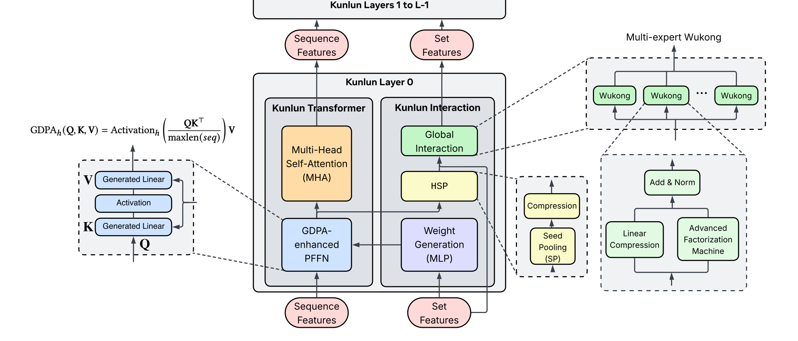
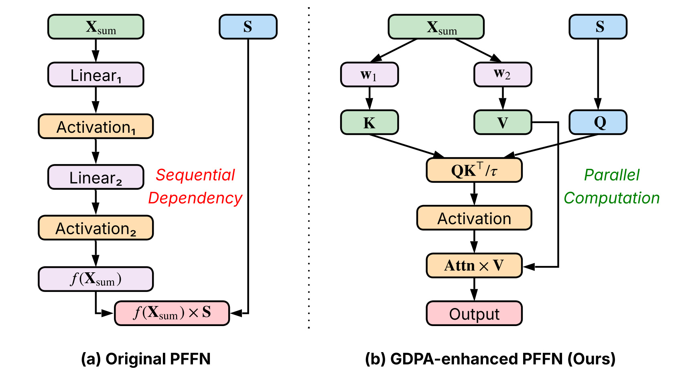
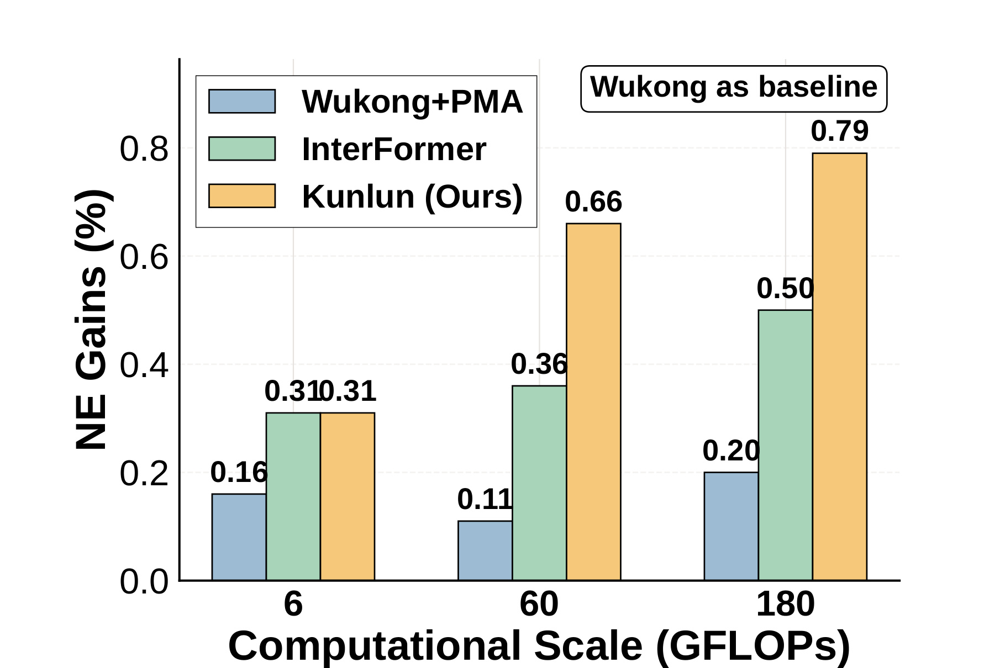
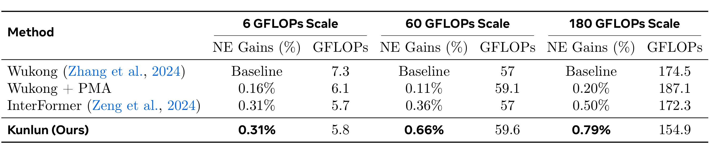
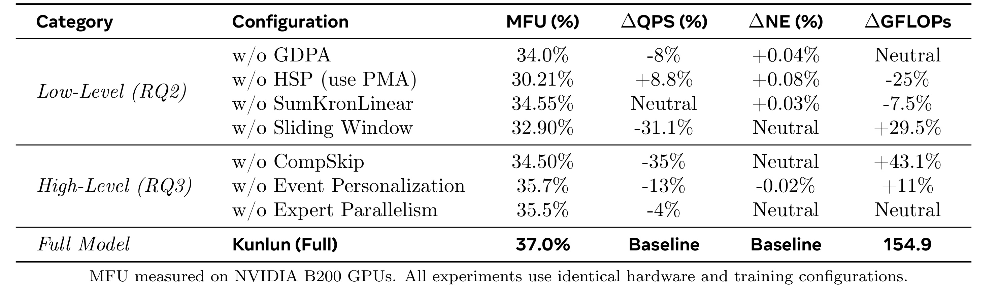
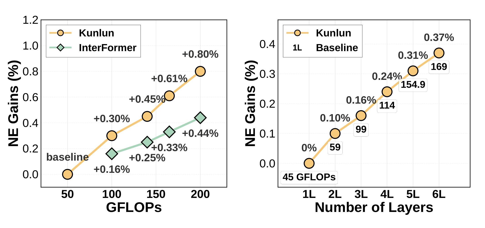

Meta Platforms, Inc. 的 Bojian Hou 等人与 OpenAI 合作者在 Kunlun: Establishing Scaling Laws for Massive-Scale Recommendation Systems through Unified Architecture Design 中讨论了一个工业推荐系统里很实际的问题：为什么大语言模型里已经相对成熟的 scaling law，在同时包含用户行为序列和非序列上下文特征的广告排序系统中很难稳定复现。论文没有把答案归结为“模型还不够大”，而是把瓶颈拆成低 MFU 的低层模块和不合理的高层计算分配，并用 Kunlun 统一架构把两类问题一起处理。论文未核验到完整 Kunlun 训练系统开源代码；但与 GDPA kernel 相关的官方实现和基准可在 Meta/FacebookResearch 的 ads_model_kernel_library 中查看，PyTorch 官方博客也给出了 GDPA 训练 kernel 的实现背景和性能细节。阅读重点不只是“Meta 又做了一个更大的推荐模型”，而是它如何把模型结构、kernel 形状、事件类型重要性和缩放曲线放进同一个工程闭环里。
1. 背景和问题
推荐系统的 scaling law 一直比大语言模型更难讲清楚。语言模型的输入基本可以被规整成 token 序列，主干结构也高度集中在 Transformer block 上；增加参数、数据和训练计算时，很多算力最终落在形状相对规则的矩阵乘和注意力 kernel 上，硬件利用率与模型容量的关系比较直接。工业广告推荐系统不是这种形态。它要在一次 CTR 预测里同时处理用户静态画像、广告侧 metadata、上下文信号、稀疏 ID 特征、 dense 数值特征，以及点击、浏览、转化、曝光等多种用户行为序列。即便业务上已经明确“行为序列很重要”，非序列上下文也不能被删掉，因为它们承载了投放、召回、预算、场景、合规和系统依赖中的大量约束。如果只把推荐系统简化成 sequence-only 模型，可能得到漂亮的研究曲线，却不一定能落到真实广告排序链路。
这篇论文的核心问题可以概括为：在联合建模 sequence 与 non-sequence features 的大规模 CTR 预测中，如何让性能随计算投入呈现可预测的幂律改善，而不是在某个规模之后因为低效模块和错误资源分配而快速进入收益递减。作者把障碍定义为 scaling efficiency 不足，也就是每增加一单位有效计算，Normalized Entropy 的改善幅度不够稳定、不够陡。论文特别强调，scaling efficiency 不是单纯的模型效果指标，而是 algorithmic effectiveness 与 computational efficiency 的乘积式问题：前者问“每个 FLOP 带来多少学习收益”，后者问“硬件理论 FLOPs 有多少真的被模型吃到了”。在推荐系统里，后者经常被低估。论文指出，现有联合建模范式在大量模块上只有约 3% 到 15% 的 MFU，而 LLM 场景中常见的 MFU 可达 40% 到 60%。这意味着推荐系统的很多“扩模型”并不是真正把更多硬件算力转换成学习信号，而是在小 embedding 维度、jagged tensor、短序列 K/V、内存受限算子和大量不规则形状之间消耗掉。
另一个背景是，推荐系统的“规模”不能只用参数量解释。论文使用 GFLOPs、QPS、MFU 和 NE 共同观察模型，而不是只报 AUC 或参数量。CTR 预估的校准质量会直接影响广告排序、竞价、预算 pacing 和收益分配，因此作者选择 NE 作为主指标。NE 越低，模型对点击概率的预测越好；如果只是 AUC 上升但概率校准变差，线上系统未必能稳定收益。这个选择很重要，因为 Kunlun 的目标并不是在公开 benchmark 上刷一个单点指标，而是在 Meta Ads 内部 70B+ 样本、数百到数千非序列特征、10+ 多事件序列、序列长度从百到千的真实训练环境下，让模型规模扩展有更可靠的投资回报。
论文对已有路线的判断也很清楚。Wukong 这类模型证明了非序列交叉特征建模也可以呈现 scaling trend，但它不是以行为序列为中心。HSTU 这类序列推荐模型更强调 sequence-only 或 request-level 的顺序建模能力，却没有充分覆盖真实 CTR 系统里的大量非序列上下文。InterFormer 试图用 interleaving 结构打通序列和非序列特征之间的双向信息流，但在大规模训练时会遇到低层模块 MFU 不高、资源分配不够精细的问题。Kunlun 的定位就是在 InterFormer 思路之上继续往工程可扩展方向推进：保留 sequence 与 non-sequence 的双向交互，同时把低层算子重写成更适合 GPU 的形状，把高层计算从“所有模块一起等比例变大”改成“按层、按事件、按模块重新分配”。
因此，Kunlun 的贡献不是一个孤立技巧，而是一次 model-efficiency co-design。它把低层模块优化和高层计算重分配都纳入架构：低层包括 Generalized Dot-Product Attention、Hierarchical Seed Pooling 和 Sliding Window Attention；高层包括 Computation Skip、Event-level Personalization 和 Global Interaction 中的 Wukong expert 并行。论文最后报告 Kunlun 在 NVIDIA B200 上把 MFU 从 17% 提到 37%，相对 state-of-the-art 达到约 2 倍 scaling efficiency，并在 Meta Ads 主要模型中部署，带来 1.2% topline metrics 改善。这里最值得关注的是问题定义本身：推荐系统 scaling law 的瓶颈不是“有没有足够多数据”，而是“模型结构是否能把更多计算稳定转化成 NE 改善”。
2. 方法
2.1 任务形式、缩放目标和 Kunlun 总体结构
Kunlun 处理的是异构特征 CTR 预测。给定用户集合 $\mathcal{U}$、物品集合 $\mathcal{I}$，用户 $u$ 的交互序列写作 $S^u=[i_1^u,i_2^u,\ldots,i_T^u]$。模型目标是估计用户 $u$ 对候选物品 $i_{T+1}$ 的点击概率：
符号解释：$y_{i_{T+1}}^u$ 是用户 $u$ 对候选物品的点击标签，$S^u$ 是历史交互序列，$\theta$ 是模型参数，$f(\cdot)$ 输出点击概率。这个公式看起来像普通 CTR 预估，但 Kunlun 的关键在于 $f$ 同时接收非序列上下文和多事件行为序列，并在多层结构里让两者反复交换信息。
缩放目标用 NE 和计算投入 $C$ 的关系表示。论文采用对数域幂律形式：
符号解释：$C$ 是总计算投入，$C_0$ 是基准计算预算，$NE_0$ 是基准性能，$\eta$ 是 scaling coefficient。$\eta$ 越大，说明 NE 随计算增加下降越快。Kunlun 关心的不只是这条曲线是否向下，而是斜率是否稳定、是否可外推。于是论文进一步定义：
符号解释：$\eta_{\text{baseline}}$ 是历史或基线系统的缩放系数。若该比值为 $2$，表示同样增加一单位对数计算，模型获得约两倍 NE 改善。这个定义把模型扩展问题从“更大是否更好”改写成“更大时每份硬件预算是否更值”。

图 1 是理解 Kunlun 的入口。每个 Kunlun layer 由两个大块组成：Kunlun Transformer Block 与 Kunlun Interaction Block。Transformer Block 面向行为序列，内部包含 GDPA-enhanced PFFN 和 Multi-Head Self-Attention；Interaction Block 面向序列和非序列之间的信息交换，内部包含 Weight Generation、HSP 和 Global Interaction。箭头方向显示了一个双向闭环：非序列特征通过 Weight Generation 生成个性化权重，去指导序列侧 PFFN；序列侧则通过 HSP 被压缩成 summary token，再进入 Global Interaction 与非序列特征、Wukong experts 一起建模。右侧的 multi-expert Wukong 表示横向扩展路径，每个 expert 处理一部分 feature interaction；顶部的 Kunlun Layers 1 to L-1 表示纵向堆叠路径。这个图说明 Kunlun 并不是把一个序列模型和一个特征交叉模型简单拼接，而是在每一层都让 sequence representation 和 set representation 互相更新。对推荐系统来说，这种设计保留了广告排序所需的上下文特征，同时让行为序列不只是最后被 pooling 的辅助信号。
2.2 特征预处理、时间编码和非序列到序列的入口
Kunlun 先把非序列特征统一成 embedding 表示。dense 特征经过线性投影，sparse 特征经过 embedding lookup，然后拼接为非序列矩阵：
符号解释：$d$ 是 embedding 维度，$n$ 是 sparse 特征数量，$\mathbf{X}^{(1)}$ 是第一层输入的非序列特征集合。这里的 set representation 不是无关紧要的 side information，而是后续 Weight Generation 和 Global Interaction 的核心输入。dense 和 sparse 特征的统一，使得模型可以在同一组模块中处理用户画像、广告属性、上下文和其他类别特征。
序列侧则需要处理多种事件序列。真实广告系统会有点击、转化、曝光、浏览等事件，不同事件的噪声、稀疏性和业务价值都不同。Kunlun 先把多条序列沿 embedding 维拼接，再通过 MLP 融合成统一序列表示 $\mathbf{S}^{(0)}\in\mathbb{R}^{T\times d}$。这一步的直觉是，不同事件类型可以共享后续建模骨架，但不应在原始输入阶段就被完全等价对待。
论文还引入 Rotary Temporal Embeddings，把 RoPE 从位置编码扩展到时间间隔编码。推荐序列中的“相邻位置”并不等于“时间接近”：昨天的点击和三个月前的点击即使在压缩序列中相邻，表达的兴趣新鲜度也很不一样。Kunlun 对相邻事件时间差做对数缩放：
并将其纳入旋转矩阵：
符号解释：$\Delta_t$ 是事件时间间隔，$\tau_{\text{scale}}$ 控制时间尺度，$\mathbf{R}_{t,\tau_t}$ 的元素由位置频率 $\theta_i$ 和时间频率 $\phi_i$ 共同决定。这个设计让模型同时看到顺序位置和真实时间间隔。工程上，它比单纯截断最近行为更细，因为模型可以区分“近期连续点击”和“同样长度但时间跨度很长”的序列。
2.3 GDPA：把 Personalized FFN 改写成 attention-style 算子
Kunlun 的第一个低层优化是 GDPA。原始 Personalized FeedForward Network 的思想是用非序列上下文生成变换权重，再作用到序列 embedding 上：
符号解释：$\mathbf{X}^{(l)}_{\text{sum}}$ 是第 $l$ 层的非序列摘要，$\mathbf{S}^{(l)}$ 是第 $l$ 层序列表示，$f(\cdot)$ 是由非序列上下文驱动的两层 MLP。这个形式表达力强，但计算形状不友好：小矩阵、短 K/V、不规则 batch 和中间激活会让 kernel 更偏 memory-bound，MFU 难以提高。
Kunlun 的关键改写是把这个 personalized transformation 看成 cross-attention。序列 token 作为 query，非序列上下文生成 key 与 value，每个 head 可以使用不同激活函数：
符号解释：$\mathbf{Q}=\mathbf{S}^{(l)}$ 表示序列 token，$\mathbf{K}=w_1^{(h)}(\mathbf{X}^{(l)}_{\text{sum}})$ 与 $\mathbf{V}=w_2^{(h)}(\mathbf{X}^{(l)}_{\text{sum}})$ 来自非序列上下文投影，$h$ 是 head 编号，$\tau$ 是缩放温度，论文中使用 $maxlen(seq)$ 比使用 $\sqrt{d}$ 或 $d$ 更合适。GDPA 与普通 softmax attention 的区别在于中间归一化不必是 softmax，而可以是 GELU 等 element-wise activation，这使它更适合表达推荐系统中的非概率型交互变换。

图 2 对比了原始 PFFN 与 GDPA-enhanced PFFN。左侧原始 PFFN 是一条顺序依赖链：非序列摘要先经过 Linear、Activation、Linear、Activation 生成 $f(\mathbf{X}_{\text{sum}})$，再与序列 $\mathbf{S}$ 相乘；其中多个步骤相互依赖，kernel 难以融合。右侧 GDPA 则把 $\mathbf{X}_{\text{sum}}$ 分别映射成 $\mathbf{K}$ 和 $\mathbf{V}$，把 $\mathbf{S}$ 映射成 $\mathbf{Q}$，再执行 $\mathbf{Q}\mathbf{K}^{\top}/\tau$、activation 和 Attn $\times \mathbf{V}$。这个结构把 PFFN 转为更接近 attention 的两个矩阵乘模式，便于使用 FlashAttention 式 block-wise fused kernel，避免在 backward 中物化大中间张量。图中红色的 sequential dependency 和绿色的 parallel computation 正是论文要强调的硬件差异：同样是表达个性化变换，GDPA 的形状更容易吃满 Tensor Core，也更容易统一自注意力、PMA 和 PFFN 等不同模块。
GDPA 的工程价值在论文和官方 kernel 资料中都被反复强调。论文报告 fused kernel 对 PFFN block 可带来最高约 $6\times$ MFU 改善；PyTorch 官方博客进一步说明，GDPA kernel 主要针对 real-world RecSys training workload 中的短 K/V、jagged sequence、large batch 和非 softmax activation 做 pipelining、tile scheduling 和 activation 近似。也就是说，GDPA 不是一个只在数学形式上漂亮的替换，而是把推荐模型中长期难以规整的 personalized transformation 拉回到 GPU 更擅长的计算模式。
2.4 HSP 与 SumKronLinear：把长序列压成可交互摘要
序列摘要是 Kunlun 的第二个低层优化。传统 PMA 使用 learnable query 对序列做 multi-head attention：
符号解释：$\mathbf{Q}_{\text{learnable}}\in\mathbb{R}^{n_{\text{tokens}}\times d}$ 是随机初始化并学习的查询 token，$\mathbf{S}$ 是输入序列。问题在于，直接用少量随机 query 从长序列中抽摘要，训练稳定性和压缩质量都可能不足，尤其当序列长度超过千级、事件类型不同、噪声比例不同的时候。
Kunlun 提出 Hierarchical Seed Pooling。它不是直接从最终 token 数量出发，而是先用过完备 seed 表示对序列做一次 seed-level attention：
符号解释：$\mathbf{E}_{\text{seed}}$ 是共享 seed embedding，$n_{\text{seeds}}>n_{\text{tokens}}$，$B$ 是 batch size。先多取 seed，再压缩成最终 token，可以理解为给序列摘要一个更稳定、更丰富的中间缓冲，而不是一开始就强制压到很少的 query token。
压缩阶段使用 SumKronLinear。给定 $\mathbf{X}\in\mathbb{R}^{B\times S\times D}$，压缩到 $\mathbf{Y}\in\mathbb{R}^{B\times T\times D}$：
符号解释：$S$ 是 seed 数量，$T$ 是输出 token 数量，$D$ 是 embedding 维度，$k$ 是 Kronecker 分解秩。完整线性变换的参数复杂度是 $O(S\cdot D\cdot T\cdot D)$，SumKronLinear 降为 $O(k\cdot(S\cdot T+D^2))$。论文给出的典型配置 $S=256,T=32,D=384,k=8$ 下参数量约减少 $14\times$。它比简单的序列维和 embedding 维可分离投影更强，因为 rank-$k$ Kronecker 结构允许捕捉序列维与 embedding 维之间的联合相关性。
HSP 在 Kunlun 里承担的是“把序列侧证据带回非序列交互”的桥梁。若没有足够好的摘要，Global Interaction 只能看到粗糙的行为压缩，非序列特征也无法从序列中获得有用反馈。若摘要太重，则 sequence-to-set 的信息回流会变成新的计算瓶颈。HSP 的设计重点就是在这两者之间找平衡：先用 seed attention 保留足够多的候选摘要，再用 SumKronLinear 做参数高效压缩，让摘要 token 可扩、可训练、可送入后续 Wukong experts。
2.5 Sliding Window、CompSkip 与事件级个性化
Sliding Window Attention 解决的是序列自注意力的复杂度问题。完整 self-attention 对长度 $T$ 的序列复杂度是 $O(T^2)$，对千级以上行为序列非常昂贵。推荐序列又天然有 locality bias：近期点击、近期转化和近期曝光通常比很久以前的行为更有预测价值。Kunlun 因此把注意力限制在局部窗口内：
符号解释：$\mathbf{Q}_t$ 是位置 $t$ 的 query，$w$ 是滑动窗口半径，$\mathbf{K}_{[t-w:t+w]}$ 和 $\mathbf{V}_{[t-w:t+w]}$ 是局部邻域的 key/value。复杂度由 $O(T^2d)$ 下降到 $O(Twd)$。论文报告在保留模型质量的情况下，Sliding Window Attention 带来 31.1% QPS 改善和 29.5% FLOPs 降低。这个结果说明，在工业 CTR 场景中，局部行为窗口不是任意剪枝，而是符合用户兴趣衰减规律的结构性偏置。
CompSkip 是高层计算重分配。它不是像传统 pruning 那样离线删模块，而是在层级结构中交替选择要算的部分。论文采用 every-other-layer pattern：偶数层跳过 self-attention，但计算新的 HSP summaries；奇数层跳过 HSP 并复用上一层摘要，同时跳过 PFFN，但计算 self-attention。对应逻辑可以简化为：
符号解释：$l$ 是 layer index。这个策略背后的直觉是，相邻层不必每次都同时刷新局部序列依赖和全局序列摘要。偶数层更新全局摘要，奇数层更新局部序列关系，二者交替即可保持表达力。论文报告 CompSkip 减少约 43.1% FLOPs，并带来约 35% QPS 提升，同时 NE 基本不变。这是整篇论文里很关键的工程信号：在深层推荐模型中，某些模块的逐层重复计算存在冗余，把它们交替化比盲目加深更划算。
Event-level Personalization 则进一步把计算预算按事件类型分配。对每个事件类型 $e$，Kunlun 配置：
符号解释：$d_{\text{model}}^{(e)}$ 控制模型维度，$n_{\text{heads}}^{(e)}$ 控制 attention head 数，$n_{\text{tokens}}^{(e)}$ 控制传给非序列交互的摘要 token 数，$L^{(e)}$ 控制处理层数，$w^{(e)}$ 控制滑动窗口大小。高价值事件如 purchase conversion 可以获得更大维度、更多 head、更多摘要 token 和更深处理；低价值或噪声更大的事件如 impression 使用更轻配置。它对应推荐系统中的一个常识：不同事件的信息密度不同，不能把曝光、点击、购买当成同样值得计算的 token 流。
2.6 Global Interaction、Wukong experts 和多层信息流
Kunlun 的 Global Interaction 模块负责把序列摘要和非序列特征放到同一个交叉特征空间里。给定第 $l$ 层的非序列摘要 $\mathbf{X}^{(l)}_{\text{sum}}$ 和 HSP 产生的序列摘要 $\mathbf{H}^{(l)}_{\text{summary}}$，模型将它们拼接后送入 mixture of Wukong experts。每个 Wukong expert 处理一个 feature partition：
符号解释：$M$ 是 expert 数量，$\mathbf{X}^{(l)}_{\text{global},i}$ 是分配给第 $i$ 个 expert 的特征子集，$\mathbf{H}^{(l)}_i$ 是该 expert 的输出。Wukong expert 内部包含 DOT product 和 deep interaction networks，用于同时捕捉线性与高阶交互。通过 expert 并行，Kunlun 获得横向扩展能力；通过堆叠 layer，Kunlun 获得纵向抽象能力。
多层信息流可以写成三类更新。第一，Weight Generation 从非序列摘要生成下一层 GDPA 个性化权重：
第二，HSP 从序列表示中产生多类摘要：
第三，Global Interaction 把非序列特征和这些序列摘要联合建模：
符号解释：$\mathbf{S}_{\text{CLS}}$ 表示 attention 学到的全局序列 token，$\mathbf{S}_{\text{HSP}}$ 表示 HSP 压缩 token，$\mathbf{S}_{\text{recent}}$ 表示近期行为 token。最终第 $L$ 层的非序列表示进入任务头：
这组公式展示了 Kunlun 的核心闭环：非序列特征不只是最后融合，而是持续生成序列侧个性化权重；序列特征也不只是被 attention 处理，而是通过摘要持续影响非序列交叉。论文声称这种堆叠带来可预测的层数缩放收益，NE improvement 从第 $l$ 层到第 $l+1$ 层大致遵循 $\Delta NE_l\approx c/\log(l+1)$。这不是严格理论证明，而是经验规律；但它对工程规划很有用，因为它允许团队估计继续加层的边际收益，并决定是否把预算转向更宽 expert、更多事件 token 或 kernel 优化。
3. 实验结果
3.1 设置、数据和评价口径
论文的实验完全基于 Meta Ads 内部大规模数据，不是公开 benchmark。数据规模为 70B+ samples，包含数百到数千个非序列特征，以及 10+ 条多事件序列，序列长度从几百到几千不等。事件覆盖 clicks、conversions、impressions 等类型。这个设置有两个后果：第一，实验更贴近真实广告排序，但外部复现会受到数据和系统不可公开的限制；第二，论文的指标更偏生产系统，包括 NE、MFU、QPS、GFLOPs 和 scaling efficiency，而不是只看单点 AUC。
Baselines 主要包括 Wukong 和 InterFormer。Wukong 代表可扩展的非序列交叉特征建模，作为 baseline 用来衡量 NE gains；InterFormer 代表联合 sequence 与 non-sequence 的生产级 state-of-the-art。论文没有把 HSTU 纳入直接比较，理由是 HSTU 更适合 sequence-centric 和 request-level 优化，而本文实验是在 impression-level CTR 场景中使用大量非序列上下文特征。这个选择有争议空间，但逻辑是自洽的：Kunlun 要解决的是异构特征广告排序，不是纯行为序列推荐。
实现上，Kunlun 使用 PyTorch，并对 GDPA 和 HSP 等关键操作使用 custom Triton kernels。论文报告支持 NVIDIA H100、B200 和 GB200，但主要公平比较在 B200 上进行，使用一致的 global batch size 和 optimizer 配置，所有实验训练一个 epoch。由于模型处在工业系统中，训练一个 epoch 的口径更接近持续训练或大规模日志训练中的资源评估，而不是小数据集上反复迭代调参。
3.2 主结果：计算规模越大，Kunlun 相对优势越明显
主实验在约 6、60、180 GFLOPs 三个计算规模上比较 Wukong+PMA、InterFormer 和 Kunlun，并用相对 Wukong baseline 的 NE gains 表示效果。需要注意，论文说明不同 scale 之间的 NE 绝对值不可直接横比，因为 feature configuration 不同；可比的是同一 scale 下不同架构的相对 NE gains。

图 3 的趋势很清楚。在 6 GFLOPs 小规模下，Kunlun 和 InterFormer 都达到 0.31% NE gains，Wukong+PMA 为 0.16%。这说明在较小计算预算下，Kunlun 的低层和高层改造还没有完全拉开差距，InterFormer 的双向交互结构已经能有效利用序列特征。但当计算扩到 60 GFLOPs，Kunlun 到 0.66%，InterFormer 只有 0.36%，Wukong+PMA 为 0.11%。到了 180 GFLOPs，Kunlun 达到 0.79%，InterFormer 为 0.50%，Wukong+PMA 为 0.20%。也就是说，从 6 到 180 GFLOPs，Kunlun 的 gains 从 0.31% 增到 0.79%，约 2.5 倍；InterFormer 从 0.31% 到 0.50%，约 1.6 倍。这里体现的不是小模型上的单点胜负，而是越到大预算，Kunlun 的低 MFU 修复和计算重分配越能转化成更陡的缩放斜率。

表 3 给出了 Figure 3 背后的精确数值，也暴露出一个更细节的事实：Kunlun 在 180 GFLOPs scale 下使用的实际 GFLOPs 是 154.9，而 InterFormer 是 172.3，Wukong baseline 是 174.5。也就是说，Kunlun 并不是靠消耗更多计算换来 0.79% gains，反而在实际 FLOPs 更低的情况下达到更高 NE 改善。这一点很关键，因为 scaling law 讨论里常见误区是把“更大模型更强”理解为简单堆算力。Kunlun 的结果更像“更有效的架构让每份计算更有学习收益，同时 kernel 更能利用硬件”。在 60 GFLOPs scale，Kunlun 的实际 GFLOPs 是 59.6，InterFormer 是 57，二者相近但 NE gains 差距已经明显；在 6 GFLOPs scale，二者差别不大，说明 Kunlun 的优势主要来自大规模时的效率与分配，而不是小模型技巧。
3.3 消融：每个模块分别解决不同层面的低效
消融表把 Kunlun 的组件分为 low-level 与 high-level 两组。low-level 主要对应算子与模块形状，包括 GDPA、HSP、SumKronLinear、Sliding Window；high-level 对应计算预算分配，包括 CompSkip、Event Personalization、Expert Parallelism。论文报告的 delta 以 full Kunlun 为基准，正的 $\Delta NE$ 表示更差，负的 $\Delta QPS$ 表示吞吐下降。

表 1 最值得读的是每个模块的“收益类型”不同。去掉 GDPA 后，MFU 从 37.0% 降到 34.0%，QPS 下降 8%，NE 变差 0.04%，说明 GDPA 同时贡献效率和质量。去掉 HSP 改用 PMA，QPS 反而提升 8.8%，GFLOPs 降低 25%，但 NE 变差 0.08%；这说明 HSP 不是为了最省算，而是为了更高质量的序列摘要，适合生产系统愿意用一部分吞吐换业务指标的场景。去掉 SumKronLinear 后 NE 变差 0.03%，QPS 基本中性，说明它主要贡献压缩表达能力。去掉 Sliding Window 后 QPS 下降 31.1%，GFLOPs 增加 29.5%，NE 中性，说明局部窗口是一个近乎免费质量保持的效率优化。
High-level 部分更能体现 Kunlun 的“资源重分配”思想。去掉 CompSkip，QPS 下降 35%，GFLOPs 增加 43.1%，NE 中性，这说明每层都重复计算所有模块并不划算。CompSkip 通过交替刷新局部序列建模和全局摘要，在不损伤 NE 的情况下大幅减少计算，是最强的效率杠杆。去掉 Event Personalization，QPS 下降 13%，GFLOPs 增加 11%，但 $\Delta NE=-0.02\%$，表面看模型质量略好；这提示事件级个性化的目标并不是盲目追求离线 NE 最低，而是在质量和资源之间找 production trade-off。去掉 Expert Parallelism，QPS 下降 4%，质量和 FLOPs 中性，说明它更多是系统并行和通信计算重叠上的优化。
这组消融对工程复现很有启发。若团队只想拿一个技巧，GDPA 和 Sliding Window 更偏 kernel/序列模块效率，HSP 和 SumKronLinear 更偏质量保持的摘要设计，CompSkip 和 Event Personalization 更偏架构级资源调度。Kunlun 的强度来自这些模块叠加后的互补，而不是某个模块单独带来所有收益。
3.4 缩放曲线、层数收益和线上部署
论文进一步把 NE improvement 画成 total compute 的函数，并比较 Kunlun 与 InterFormer 的曲线。作者声称 Kunlun 的 scaling coefficient 约为 InterFormer 的 2 倍，即相同对数 compute 增量带来更大 NE 改善。这里的“2 倍”应理解为同一内部数据和训练口径下的经验缩放效率，而不是跨场景普适常数。

图 4 左图显示 Kunlun 曲线比 InterFormer 更陡。随着 GFLOPs 从约 50 到 200 增加，Kunlun 的 NE gains 标注从 baseline、0.30%、0.45%、0.61% 到 0.80%，InterFormer 则从 0.16%、0.25%、0.33% 到 0.44%。这说明 Kunlun 在较大计算区间内仍能从新增计算中获得稳定收益。右图则固定一个基准计算框架，观察层数从 1L 到 6L 的变化：1L 为 baseline，2L 到 6L 的 NE gains 约从 0.10%、0.16%、0.24%、0.31% 到 0.37%，并标注对应 GFLOPs 从 45、59、99、114、154.9 到 169。曲线呈递增但边际收益下降，符合论文给出的 $\Delta NE_l\approx c/\log(l+1)$ 直觉。对工程团队而言，这类曲线的价值在于资源规划：如果第 5 层到第 6 层只带来有限收益，也许应把预算用于更重要事件的 token、kernel 优化或 expert 宽度，而不是机械加深。
生产部署结果部分很短，但信息量大。Kunlun 已部署到 Meta Ads 主要模型，并带来 1.2% topline metrics 改善。论文没有展开线上实验的具体流量分桶、指标定义、置信区间或长期稳定性，这在工业论文中可以理解，但也限制了外部判断。1.2% topline 对广告系统可能非常显著，不过读者不能把它直接等价为所有推荐业务的预期收益。更稳妥的解读是：Kunlun 在 Meta Ads 的内部异构特征广告排序场景中已经通过生产验证，说明它的 kernel、训练吞吐和模型质量 trade-off 不是只停留在离线实验。
4. 总结
4.1 我的判断
Kunlun 最有价值的地方，是把推荐系统 scaling law 从“模型规模扩大后效果会不会涨”推进到“架构是否能把更多计算稳定变成可校准的 CTR 质量提升”。它不是在 sequence-only 与 feature-cross-only 之间二选一，而是承认真实广告系统必须同时保留行为序列和非序列上下文，然后用 GDPA、HSP、Sliding Window、CompSkip、Event Personalization 和 Wukong experts 组成一套完整的效率闭环。从研究角度看，它给出了一个清晰问题定义；从工程角度看，它提供了多个可拆分落地的模块。
4.2 工程启发与复现建议
如果要在其他工业推荐系统中借鉴，第一步不是照搬整个 Kunlun，而是先测现有模型的 MFU、QPS、per-module FLOPs 和 NE/Logloss 曲线。若瓶颈集中在 personalized FFN 或 cross-attention 式模块，GDPA 和 fused kernel 最值得优先评估；若长序列摘要质量不足，HSP 与 SumKronLinear 更相关；若深层模型的部分模块重复计算但质量收益小，CompSkip 是低风险方向；若事件类型价值差异明显，Event-level Personalization 应比统一配置更合理。复现时必须同时看质量、吞吐和硬件利用率，否则很容易得到“离线略好但线上不划算”的模型。
4.3 局限与风险
这篇论文的主要局限也很明显。第一，数据集、训练日志和完整系统没有公开，外部无法严格复现实验曲线。第二，线上 1.2% topline metrics 只给出结果，没有充分披露实验窗口、流量规模、置信区间和长期稳定性。第三，Kunlun 的收益与 Meta Ads 的特征体系、硬件配置和训练框架强相关，迁移到中小规模业务时，GDPA kernel 和 CompSkip 的收益可能不成比例。第四，Event-level Personalization 依赖事件价值判断，如果业务目标变化或事件标签有偏，手工分配计算可能固化错误优先级。第五，论文证明的是经验缩放规律，不是理论上保证所有异构推荐模型都满足同样幂律。
4.4 后续跟进
后续我会重点关注三类问题。其一，GDPA kernel 的开源实现是否继续完善到更容易在非 Meta 环境中复现，特别是 Blackwell 以外硬件、普通 Triton 和实际 jagged tensor 输入上的表现。其二，Kunlun 与 Wukong、InterFormer、HSTU、MARM 等工业推荐架构之间是否能形成更统一的 design space：哪些模块解决序列建模，哪些模块解决非序列交叉，哪些模块解决在线推理成本。其三，scaling efficiency 是否可以被自动化控制，例如根据离线 NE slope、MFU、QPS 和线上收益动态决定加层、加宽、调事件预算或启用 CompSkip，而不是靠人工设定结构。若这条线继续发展，推荐系统的 scaling law 可能会从经验报告变成真正的资源配置工具。